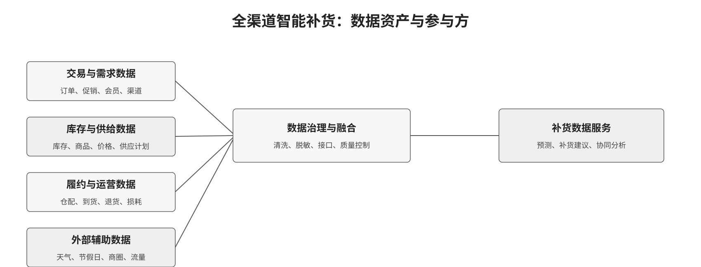
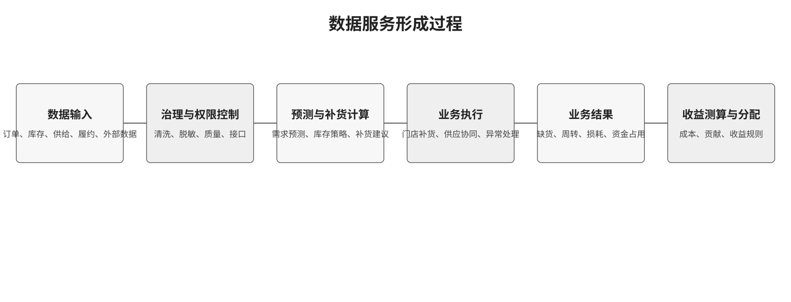

零售行业数据资产估值与收益分配研究
以全渠道智能补货为例。本页面用于展示第二周已整理的案例、证据边界和估值计算结构。
1. 研究范围
研究对象为全渠道智能补货服务。重点不是原始数据的直接交易，而是经过授权、治理和场景化处理后形成的需求预测、补货建议、接口、模型结果或持续服务。
| 研究问题 | 当前材料 | 仍需补证 |
|---|---|---|
| 谁掌握补货相关数据？ | 数据资产地图、参与方和权利边界 | 具体合同、接口权限和授权链 |
| 数据如何形成服务？ | 三个案例的产品形态与公开业务成效 | 计费单位、报价或招投标资料 |
| 价值如何估计并分配？ | 场景收益、成本扣除和贡献分配原型 | 经营参数、访谈或专家校准 |
2. 数据资产与服务形成过程
零售商、供应商、仓配方、平台和公共数据方共同提供不同类型的数据。可估值对象是数据服务，而不是未处理的个人信息明细。


3. 案例比较
| 案例 | 数据/产品形态 | 公开披露的结果 | 本研究中的用途 |
|---|---|---|---|
| 全球蛙 | 消费行为、库存、物流、价格和销售数据；补货、洞察、协同服务 | 转化率 +15pct；销售额 +15%；库存周转 +30%；库存成本节省约 2000 万元 | 主案例：把业务结果连接到收益法估值 |
| 瓴羊天攻智投 | 户外广告、线下售点、电商行为；圈选、投放、投后分析 | 户外广告投放效果 +41%；采用“自营+平台”模式 | 对照案例：说明多方数据、模型和持续服务的组合 |
| 京东库存配置 | 库存、订单和配送网络数据；选品和库存分配算法 | 本地履约率 +0.54%；FDC 需求满足率 +1.05% | 工程对照：为敏感性分析提供效果参数参考 |
公开案例通常披露业务成效多于合同价格。页面仅讨论收费逻辑和研究假设，不展示为真实市场报价。
4. 场景化估值计算器
以下数值用于说明计算结构。结果不构成报价、投资建议或真实分成建议。
B = ΔGP + ΔIC + ΔWL + ΔLE
NB = B - C_service - C_compliance - C_infra
- 恢复销售额
- -
- 新增毛利 ΔGP
- -
- 库存成本节约 ΔIC
- -
- 场景总收益 B
- -
- 可分配净收益 NB
- -
- 零售商（32.0%）
- 供应商（14.5%）
- 平台/数商（37.5%）
- 基础设施方（16.0%）
5. 研究边界与下一步
目前可以使用的结论
- 全球蛙案例说明智能补货和协同服务可以对应可量化的业务改善。
- 政策材料支持按照投入和贡献讨论数据资产收益分配。
- 数据服务可以以接口、模型结果或持续服务等形式交付。
第三周需要补充的材料
- 报价页、合同样本或招投标公告。
- 毛利率、库存持有成本、缺货率和损耗率的真实区间。
- 行业人士对五项贡献变量和分配权重的意见。